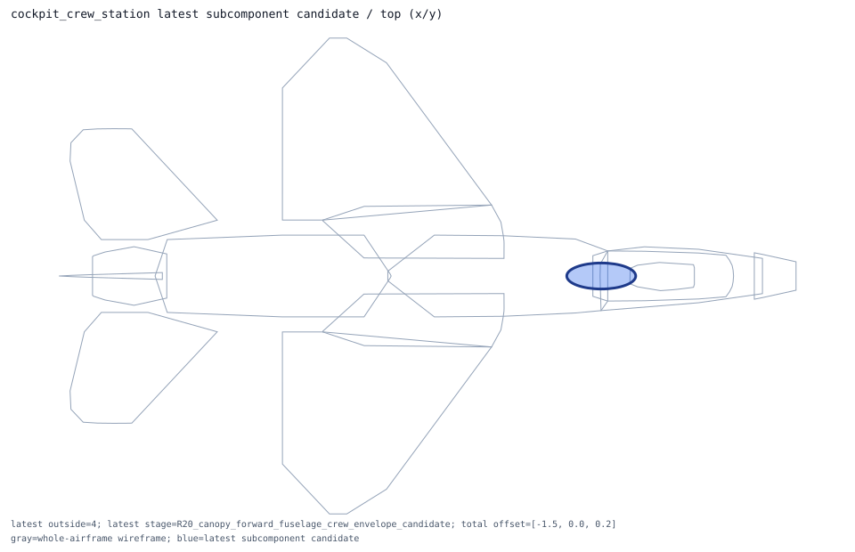
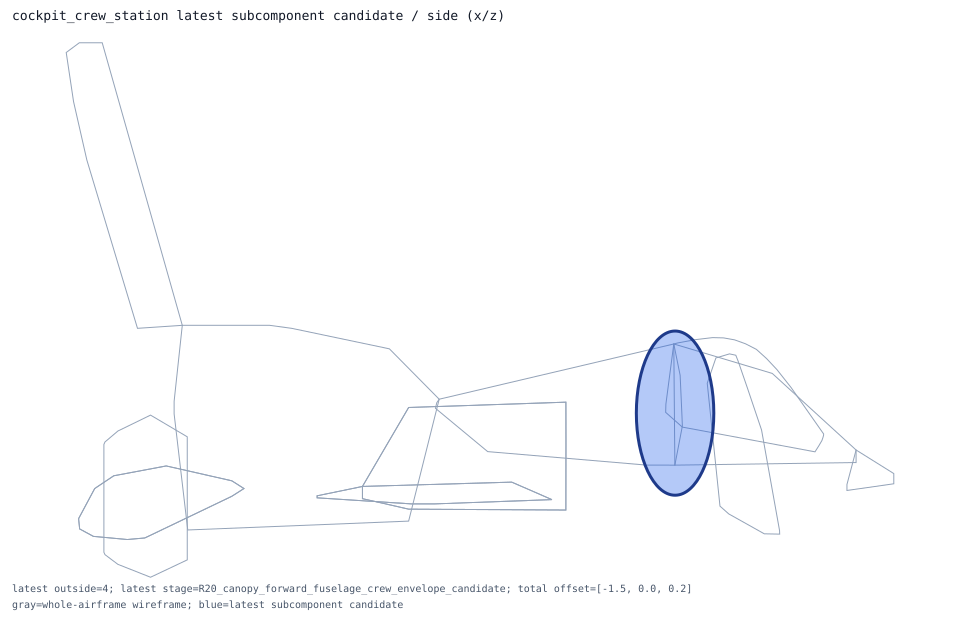
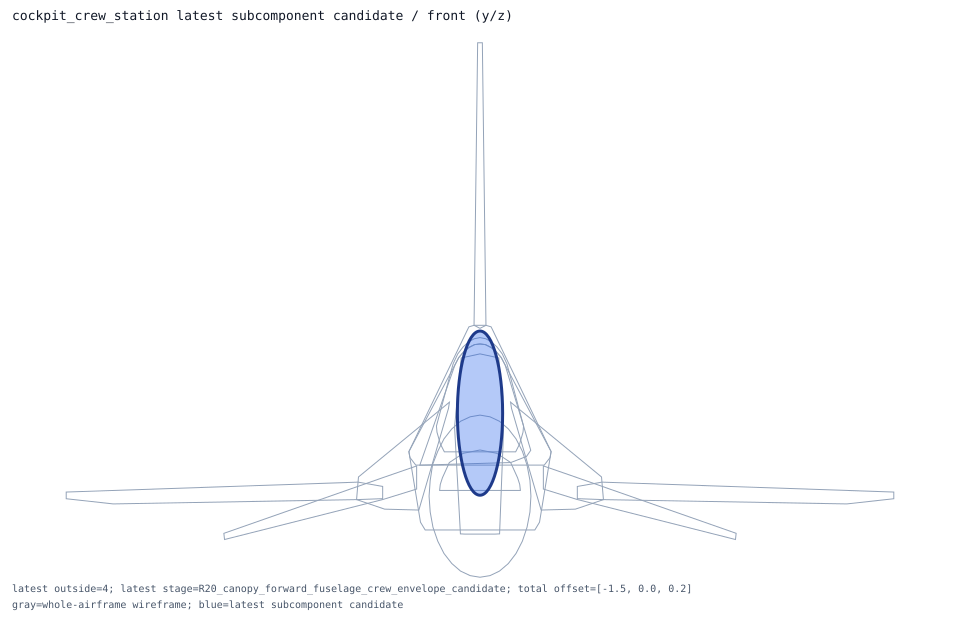

cockpit_crew_station
ellipsoid -> crew_envelope_ellipsoid; shape_candidate_does_not_reduce_exposure_requires_new_placement_model
Candidate Details
- item: cockpit_crew_station
- type: receiver_prior
- system: cockpit
- role: crew_volume_receiver
- current shape: ellipsoid axis=none
- candidate evaluation shape: ellipsoid axis=none
- nominal dimensions m: [1.25, 0.508, 1.15]
- dimension policy: preserve_nominal_public_or_declared_prior_dimensions_no_shrink
- placement policy: preserve_current_crew_envelope_dimensions_then_require_multi_region_cockpit_review
- current outside samples: 3
- candidate outside samples: 3
- candidate center shift m: 0.0
- centerline candidate offset m: [-0.5, 0.0, 0.1]
- centerline candidate center m: [3.287559, 0.0, -0.52538]
- centerline candidate outside samples: 0
- centerline candidate status: centerline_candidate_resolves_silhouette_exposure_review_required
- centerline candidate action: review_centerline_semantics_before_promoting_to_prior_or_segment_rule
- latest candidate stage: R20_canopy_forward_fuselage_crew_envelope_candidate
- latest candidate center m: [2.287559, 0.0, -0.42538]
- latest candidate outside samples: 4
- latest candidate status: latest_candidate_still_exposes_silhouette_requires_geometry_model
- latest candidate action: keep_runtime_inactive_and_design_new_section_or_envelope_model
- recommended action: design_new_size_or_centerline_model_before_runtime_activation
- rationale: crew station already uses an ellipsoid; remaining exposure means placement or envelope dimensions need review, not a box-to-rounding fix.
- centerline rationale: local silhouette search reduces exposure but cannot clear the cockpit envelope; this remains a canopy/forward-fuselage envelope modeling issue.
- latest rationale: crew station damage is a canopy/forward-fuselage envelope, not a radome-side point receiver; the R20 cross-region centerline clears the sampled silhouettes while preserving the crew envelope dimensions.


